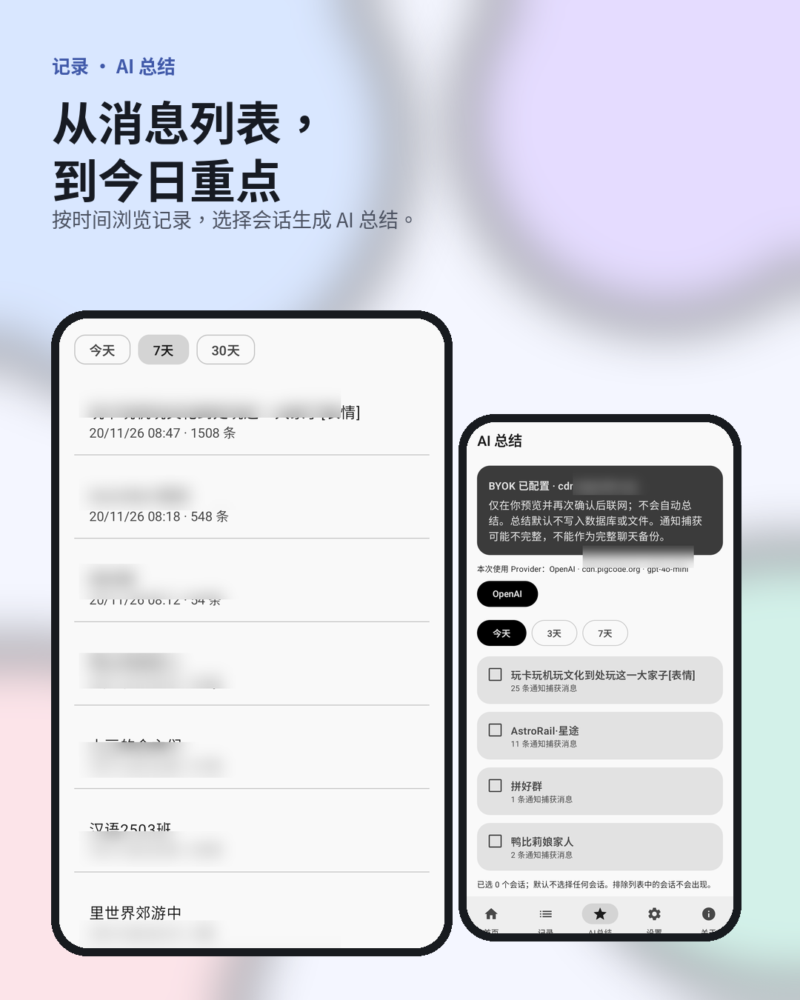

核心功能
- 多消息聚合为会话式通知
- 私聊、群聊和服务号分渠道
- 打开时沿用微信原 contentIntent
- Android Auto 会话元数据与兼容动作
- 脱敏诊断与可选保活
- 可选气泡与公开 Launcher 入口学习

获得更完整的会话通知、受支持的快捷动作、Android Auto 展示、通知诊断和可选气泡。
需要通知使用权。诊断报告不含聊天正文、联系人、Main_User、通知 key、Intent extras 或凭据；近期事件只在内存中。模拟回复不记日志、不持久化、不上传；稳定会话 ID 使用私有随机盐与 HMAC。
模拟回复不会发送到微信，模拟已读只清理本地状态。气泡、直达聊天与后台可靠性受 Android、桌面、厂商策略和微信影响。通知捕获不是完整聊天备份；应用独立开发，与腾讯无隶属或背书关系。



請只從下方官方渠道安裝。